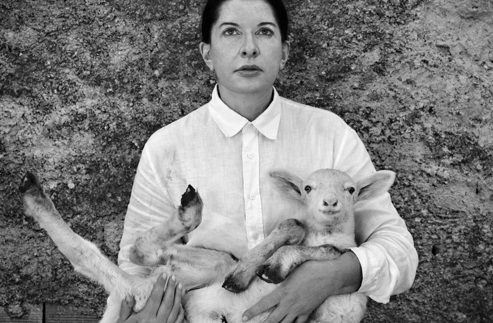

Sobre Marina
Marina Abramović é uma artista performática que iniciou sua carreira no início da década de 1970 e manteve-se em atividade desde então. Considera-se a “avó da arte da performance". Seu trabalho explora as relações entre o artista e a plateia, os limites do corpo e as possibilidades da mente.
Marina e um cabrito
Principais trabalhos
Marina teve vários trabalhos marcantes ao longo de sua história
- Trabalho 1
- Trabalho 2
- Trabalho 3
Marina e Ulay
Ulay foi seu maior parceiro. Clique nos links e conheça mais sobre: